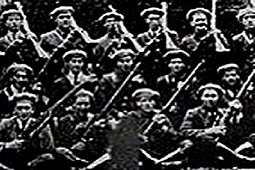

On 21 January 1919, the day of Dáil Éireann's first meeting, some members of the south Tipperary Brigade of the Irish Volunteers attacked and killed two Royal Irish Constabulary (RIC) constables in Soloheadbeg, County Tipperary. This new ruthlessness was the first expression of physical force from a group of the Volunteers who wanted to act independently of Sinn Féin, the political wing. In August 1919 the Volunteers changed their name to the Irish Republican Army (IRA). Although they were supposedly under the control of Cathal Brúgha, the Dáil Minister for Defence, in practice they acted independently. Éamon de Valera was in jail in England at the time of the first Dáil but was elected President of the Irish Republic at the second Dáil session in April 1919. He travelled to America to raise money for the Irish Republic but his absence at such a crucial time meant that Michael Collins, Dáil Minister of Finance, became chief organiser of the resistance against British rule. Collins was the Adjutant-General of the Volunteers and was committed to looking for a solution to the British problem through physical force. Several British soldiers and RIC men were killed by the IRA in Limerick and Cork during 1919 but local juries refused to bring in verdicts of murder at their inquests. The IRA had the support of much of the population, particularly in rural areas. By the end of the year it was obvious that the British authorities would not recognise Dáil Éireann or negotiate with Sinn Féin. They were determined to use force to suppress the rebels.
The English government sent the first of a series of of ex-service men taskforces to Ireland in March 1920. Ruthless and violent, they became known as the Black and Tans as they wore a mixture of regular army and RIC uniforms. They were supported by the more elite Auxiliaries who were ex-British army officers. The IRA set up guerrilla-like flying columns - small groups of men who were able to move easily throughout the country and local people supplied them with food and shelter. There were a series of atrocities and reprisals committed on both sides. The deaths of two Cork Lord Mayors - Tomás MacCurtain and Terence MacSwiney - and the hanging of Kevin Barry swung public opinion towards Sinn Féin. On 21 November 1920, a date which became known as Bloody Sunday, eleven British intelligence officers were shot in Dublin by Michael Collins' gunmen. Crown forces reacted by shooting into the crowd at a GAA match in Croke Park that afternoon, killing twelve people and wounding sixty. Marital Law was declared in Cork, Kerry, Limerick and Tipperary on 10 December 1920 and the following day a group of Auxiliaries went on the rampage in Cork city, burning down a substantial part of the city centre. Eventually Lloyd George, the British Prime Minister realised that he had to seek a truce with Sinn Féin. It was agreed that all military activity was to cease at noon on 11 July 1921.